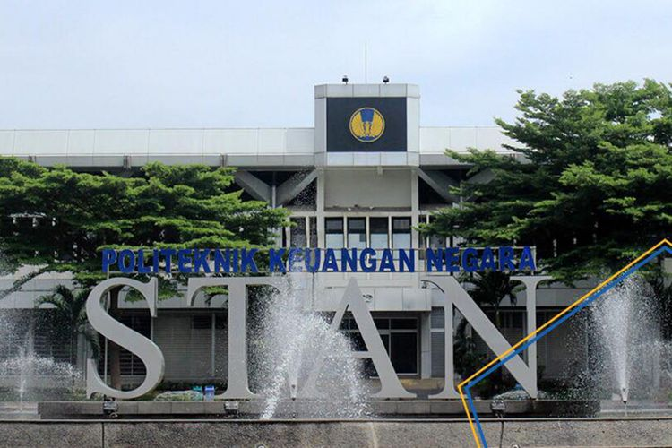
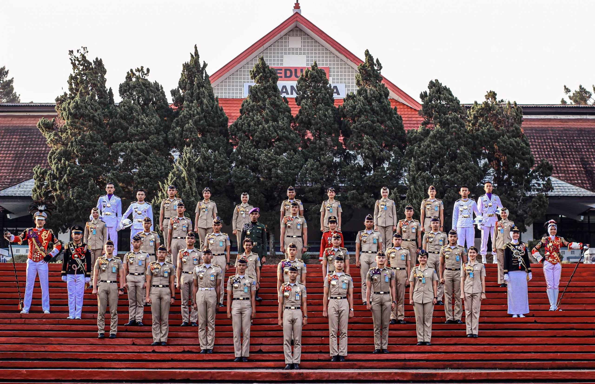
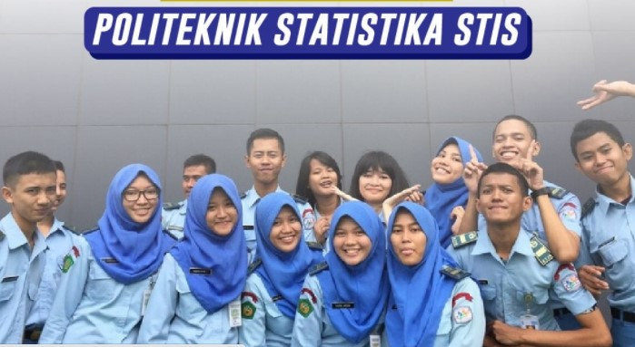
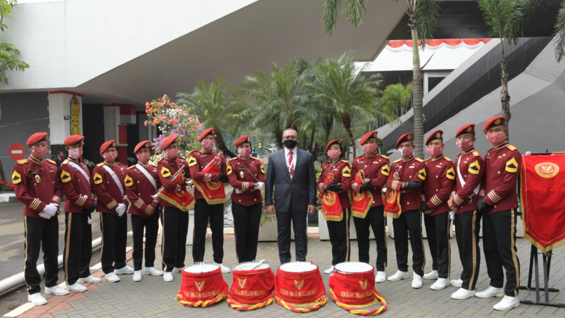
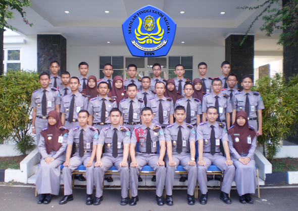

Persyartan Masuk Sekolah Kedinasan
Apabila kamu tertarik untuk mendaftarkan diri, tentu saja kamu wajib untuk mengetahui apa saja syarat utama agar kamu dapat melakukan pendaftaran di Sekolah Kedinasan tersebut.Kamu sebagai calon pelamar wajib tahu mengenai apa saja ketentuan umum dari jurusan, pendidikan, hingga profil dari sekolah dinas yang hendak kamu lamar.
Namun yang pasti jangan sampai terlewat adalah persyaratannya yang perlu dipenuhi saat kamu hendak melakukan pendaftaran tersebut.Kamu perlu menyiapkan dan memastikan bahwa semua syarat dokumen yang dibutuhkan telah disiapkan sebelumnya. Di bawah ini adalah beberapa syarat dokumen yang wajib disiapkan sejak dini:
- Kartu Tanda Penduduk (KTP) asli pelamar bersangkutan
- Kartu Keluarga (KK) pelamar
- Ijazah resmi pelamar
- Rapor SMA/Sederajat pelamar
- Pas foto terbaru pelamar
- Dokumen dan berkas penting lain sesuai ketentuan dari sekolah kedinasan tujuan.
Syarat Pendaftaran PKN STAN 2022

A. Kriteria Peserta
Kebutuhan dari tiap-tiap Program Studi diperuntukkan bagi peserta dengan kriteria:
- Program Reguler adalah program penerimaan mahasiswa baru dari seluruh wilayah di Indonesia yang ditujukan untuk mengisi formasi/kebutuhan pegawai Kementerian Keuangan, Kementerian/Lembaga Lainnya, atau Pemerintah Daerah.
- Program Afirmasi adalah program penerimaan mahasiswa baru yang dikhususkan untuk putra putri dari Provinsi Papua, Papua Barat, Maluku, Maluku Utara, dan Nusa Tenggara Timur untuk mengisi formasi/kebutuhan pegawai Kementerian Keuangan. Khusus untuk Provinsi Papua dan Papua Barat berasal dari program Afirmasi Pendidikan Menengah (ADEM) dan non ADEM/umum.
B. Syarat-Syarat Pendaftaran
- Lulusan (tahun 2021 dan sebelumnya) atau calon lulusan (tahun 2022) semua Sekolah Menengah Atas atau yang sederajat.
- Persyaratan nilai (bukan hasil pembulatan) bagi peserta
- lulusan tahun 2021 dan sebelumnya, memiliki rata-rata nilai ujian pada ijazah tidak kurang dari 70,00 dengan skala 100,00; atau
- calon lulusan tahun 2022, memiliki nilai rata-rata rapor untuk komponen pengetahuan pada 5 (lima) semester (semester gasal dan genap untuk kelas X dan XI serta semester gasal kelas XII) tidak kurang dari 70,00 dengan skala 100,00 dengan ketentuan pada saat pendaftaran ulang yang bersangkutan telah dinyatakan lulus dan memiliki rata-rata nilai ujian pada ijazah tidak kurang dari 70,00 dengan skala 100,00.
- Usia maksimal pada tanggal 1 September 2022 adalah 21 tahun, dalam pengertian calon peserta yang lahir sebelum tanggal 1 September 2001 tidak diperkenankan untuk mendaftar. Usia minimal pada tanggal 1 September 2022 adalah 15 tahun.
- Telah mendaftar pada portal Lembaga Tes Masuk Perguruan Tinggi (LTMPT) untuk mengikuti Ujian Tulis Berbasis Komputer (UTBK) Tahun 2022.
- Memiliki nilai UTBK Tes Potensi Skolastik (TPS) minimal 600 dan Tes Bahasa Inggris (TBI) minimal 450 untuk peserta program reguler atau TPS minimal 400 dan TBI minimal 375 untuk peserta program afirmasi.
- Sehat jasmani dan rohani serta bebas dari ketergantungan napza (narkoba, psikotropika, dan zat adiktif lainnya).
- Bagi pria tidak bertato/bekas tato dan tidak bertindik atau bekas ditindik telinganya atau anggota badan lainnya, kecuali karena ketentuan agama/adat.
- Bagi wanita tidak bertato/bekas tato dan tidak ditindik/bekas tindik anggota badan lainnya selain telinga dan tidak bertindik/bekas tindik di telinga lebih dari 1 (satu) pasang (telinga kiri dan kanan).
Syarat Pendaftaran IPDN Tahun 2022

Sebagai calon mahasiswa di IPDN yang ingin mendaftarkan diri, kamu perlu memenuhi persyaratan yang ditetapkan yang meliputi syarat umum, syarat administrasi, dan syarat khusus.
Persyaratan Umum Pendaftar IPDN 2022
- Pendaftar IPDN 2022 adalah Warga Negara Indonesia (WNI)
- Pendaftar IPDN 2022 berusia minimal 16 (enam belas) tahun dan maksimal 21 (dua puluh satu) per tanggal 1 September
- endaftar IPDN 2022 mempunyai tinggi badan minimal 160 cm (pria) dan minimal 155 cm (wanita)
Persyaratan Administrasi Pendaftar IPDN 2022
- Pendaftar IPDN 2022 mempunyai ijazah paling rendah di tingkat Sekolah Menengah Atas (SMA) atau Madrasah Aliyah (MA) termasuk lulusan Paket C
- Pendaftar IPDN 2022 yang lulus tahun 2018 – 2021 memenuhi ketentuan: Nilai Rata-rata Ijazah minimal 70,00 untuk Nilai Rata-rata Rapor dan Nilai Ujian Sekolah; dan Nilai Rata-rata Ijazah bagi Provinsi Papua dan Provinsi Papua Barat minimal 65,00 untuk Nilai Rata-rata Rapor dan Nilai Ujian Sekolah.
- E-KTP untuk Pendaftar IPDN 2022 yang berusia 17 tahun atau Kartu Keluarga (KK) bagi yang belum memiliki e-KTP
- Pendaftar IPDN 2022 berdomisili minimal 1 (satu) tahun di provinsi tempat mendaftar secara sah yang dihitung ketika tanggal awal pendaftaran dan dibuktikan melalui Kartu Tanda Penduduk (KTP), Kartu Keluarga (KK), dan Surat Pindah (bagi yang pindah tempat tinggal) dan dokumen lain yang berkaitan dengan domisili. Jika pendaftar melakukan duplikasi, pemalsuan, atau rekayasa, maka akan ditindak sesuai hukum yang berlaku
- Surat Keterangan Bebas Narkoba yang dikeluarkan Rumah Sakit Bhayangkara Polri/Badan Narkotika Nasional Provinsi/Kabupaten/Kota
- Alamat e-mail aktif
- Pasfoto berwarna dengan latar belakang merah 4×6 cm dengan ketentuan foto menghadap ke depan, tidak memakai kacamata, dan memakai kemeja lengan panjang putih polos.
Persyaratan Khusus Pendaftar IPDN 2022
- Pendaftar IPDN 2022 Tidak sedang menjalani atau terancam hukuman pidana karena melakukan kejahatan
- Tidak bertindik atau bekas ditindik telinganya atau anggota badan lainnya bagi peserta pria (kecuali karena ketentuan agama/adat)
- Pendaftar IPDN 2022 tidak mempunyai tato
- Pendaftar IPDN 2022 belum pernah menikah atau kawin dan bagi pendaftar wanita belum pernah hamil atau melahirkan
- Pendaftar IPDN 2022 belum pernah diberhentikan sebagai Praja IPDN dan perguruan tinggi lainnya dengan tidak hormat
- Pendaftar IPDN 2022 yang dinyatakan lulus dan dikukuhkan sebagai Praja IPDN, maka
- Sanggup untuk tidak menikah atau kawin selama mengikuti pendidikan
- Bersedia diangkat menjadi CPNS/PNS dan ditugaskan/ditempatkan diseluruh wilayah NKRI
- Bersedia ditempatkan pada proses pembelajaran di seluruh kampus IPDN
- Bersedia mematuhi segala peraturan yang berlaku di IPDN
- Bersedia diberhentikan sebagai Praja IPDN jika melanggar Disiplin Praja sebagaimana yang telah diatur dalam Pedoman Tata Kehidupan Praja
Syarat Pendaftaran di STIS 2022

- Pendaftar dinyatakan sehat secara jasmani dan rohani, seperti bisa atau layak bekerja dan beraktivitas di dalam ruangan dan di luar ruangan (lapangan)
- Pendaftar dinyatakan bebas narkoba
- endaftar dinyatakan tidak buta warna (baik buta warna secara total maupun buta warna parsial). Bagi pendaftar yang memakai kaca mata atau lensa kontak minus (rabun jauh) dan/atau plus (rabun dekat), bisa diberikan toleransi jika di bawah 6 dioptri
- Pendaftar adalah lulusan atau siswa kelas 12 SMA/MA peminatan kelompok MIPA/IPS atau siswa kelas 12 SMK/MAK Peminatan Teknik Komputer dan Informatika
- Pendaftar mempunyai nilai Matematika (Kelompok A/Umum) dan Bahasa Inggris minimal 80,00 (skala 1-100) atau 3,20 (skala 1,00-4,00) pada Ijazah atau nilai rapor semester gasal kelas 12
- Pendaftar belum menikah dan bersedia tidak menikah selama mengikuti pendidikan di Politeknik Statistika STIS hingga waktu pengangkatan sebagai PNS
- Pendaftar tidak sedang menjalankan ikatan dinas dengan instansi lain
Kuota di STIS untuk Tahun 2022
Kuota penerimaan mahasiswa baru di STIS tahun 2022 belum dirilis secara resmi. Namun, untuk referensi pendaftaran tahun ini, kamu bisa melihat kuota yang diberlakukan tahun 2021 dengan total mahasiswa 600 orang.
- Program Studi Komputasi Statistik Program Diploma IV: 150 mahasiswa
- Program Studi Statistika Program Diploma III: 100 mahasiswa
- Program Studi Statistika Program Diploma IV: 250 mahasiswa
Jika kamu sudah menyelesaikan studi jenjang D3, maka kamu berpeluang menjadi calon Aparatur Sipil Negara (ASN) golongan II/c serta akan mendapatkan tugas di Badan Pusat Statistik (BPS) di seluruh wilayah Indonesia.
Sedangkan kamu yang menempuh studi di jenjang D4, kamu akan perpeluang diangkat sebagai calon Aparatur Sipil Negara (ASN) golongan III/a di Badan Pusat Statistik (BPS)/ Kementerian/ Lembaga/ Instansi lainnya di seluruh wilayah Indonesia.
Persyaratan Pendaftaran Calon Taruna-taruni STIN

Bagi kamu yang berencana mengikuti pendaftaran STIN 2022-2023, maka perlu memperhatikan persyaratan yang diberikan. Jika tidak memenuhi persyaratan yang ada, bisa jadi nanti peserta dibatalkan dan tidak bisa mengikuti seleksi tahap selanjutnya.
Persyaratan Umum Calon Taruna STIN
- Warga Negara Indonesia (laki-laki/perempuan)
- Setia kepada Negara Kesatuan Republik Indonesia berdasarkan Pancasila dan Undang-Undang Dasar Negara Republik Indonesia tahun 1945
- Tidak pernah terlibat tindak pidana
- Berkelakuan baik yang dibuktikan dengan Surat Keterangan Catatan Kepolisian (SKCK)
- Belum pernah menikah dan bersedia tidak menikah selama masa pendidikan
A. Registrasi pada Portal SSCASN-BKN
- Calon peserta seleksi mengakses portal https://sscasn.bkn.go.id. dan memilih DIKDIN (https://dikdin.bkn.go.id ).
- Calon peserta seleksi membuat akun di portal https://dikdin.bkn.go.id.
- Calon peserta seleksi wajib memiliki akun e-mail aktif yang akan digunakan selama masa pendaftaran dan seleksi.
- Calon peserta seleksi login ke portal https://dikdin.bkn.go.id. dengan menggunakan akun yang telah dibuat menggunakan Nomor lnduk Kependudukan (NIK) dan password yang telah didaftarkan.
- Calon peserta seleksi memilih STIN, melengkapi biodata, dan memilih lokasi ujian. Calon peserta seleksi hanya boleh mendaftar di salah satu lnstansi atau Lembaga Pendidikan Kedinasan, dan apabila mendaftar di dua lembaga atau lebih maka dinyatakan gugur.
B. Registrasi pada Portal STIN
Dokumen yang wajib diunggah yaitu:
- Surat ljin Orang Tua/Wali Asli. Contoh surat dapat diunduh di https://ptb.stin.ac.id. Setelah selesai dibuat, surat tersebut diunggah (upload) dalam bentuk pdf/jpeg dengan nama file ortu.pdf atau ortu.jpeg;
- ljazah SMA/SMK/MA yang telah dilegalisir untuk lulusan tahun 2020 dan tahun 2021. Penamaan file lihat di pengumuman resmi; Surat Keterangan Lulus dari sekolah bagi lulusan tahun 2022. Dokumen tersebut diunggah (upload) dalam bentuk pdf/jpeg. Penamaan file lihat di pengumuman resmi.
- Foto berwarna seluruh badan, terbaru, tampak depan, ukuran postcard (3R), dan mengenakan pakaian atas berwarna putih serta bawah berwarna hitam. Bagi laki-laki latar belakang foto berwarna merah dan bagi perempuan latar belakang foto berwarna biru. Foto tersebut diunggah dalam bentuk pdf/jpeg dengan nama file foto.pdf atau foto.jpeg; Kartu Keluarga (KK). Dokumen tersebut diunggah dalam bentuk pdf/jpeg dengan nama file kk.pdf atau kk.jpeg.
Calon peserta seleksi mendapatkan konfirmasi kelengkapan administrasi melalui e-mail masing-masing. Verifikator dari Panitia Seleksi melakukan verifikasi data atau dokumen calon peserta seleksi yang telah masuk.
Daftar Persyaratan Pendaftaran Poltek SSN

A. PERSYARATAN UMUM
- Warga Negara Indonesia (WNI) yang bertakwa kepada Tuhan Yang Maha Esa, setia dan taat kepada Pancasila, UUD 1945 dan Negara Kesatuan Republik Indonesia;
- Pria, dengan usia minimal 17 (tujuh belas) tahun dan tidak melebihi dari 21 (dua puluh satu) tahun pada tanggal 31 Desember 2022;
- Nilai Matematika dan Bahasa Inggris (Teori/Pengetahuan) masing-masing minimal 80 (Delapan Puluh) pada semester IV dan V, menyertakan surat keterangan konversi nilai rapor skala 0-100 yang telah dilegalisasi dan ditandatangani oleh Kepala Sekolah bersangkutan (bila nilai rapor menggunakan skala huruf);
- Menyertakan transkripsi nilai rapor dalam bahasa Indonesia (bagi sekolah yang menggunakan selain bahasa Indonesia)
- Sehat jasmani dan rohani, tidak buta warna (partial maupun total), tidak cacat fisik dan mental, serta tidak memiliki penyakit bawaan dan/atau menular yang dapat mengganggu proses belajar;
- Tinggi badan minimal 165 (Seratus enam puluh lima) cm dengan berat badan seimbang yang dibuktikan dengan surat hasil pemeriksaan dari dokter Puskesmas setempat;
B. PERSYARATAN ADMINISTRASI
- enyerahkan fotokopi transkrip Nilai Ujian Sekolah (NUS) yang telah dilegalisasi, sebelum pelaksanaan Seleksi Akademik.
- Berkas di bawah ini dilengkapi pada saat lulus Seleksi Kesamaptaan, Psikologi, dan Wawancara serta diserahkan pada saat Seleksi Pantukhir, yaitu:
- Asli Surat Lamaran kepada Direktur Politeknik Siber dan Sandi Negara ditulis tangan dengan tinta warna hitam, bermaterai Rp. 10.000,-;
- Asli dan fotokopi Rapor semester IV dan V dan lembar identitas diri pada Rapor yang telah dilegalisasi dan ditandatangani oleh Kepala Sekolah bersangkutan;
- Asli dan fotokopi Ijazah yang telah dilegalisasi dan ditandatangani oleh Kepala Sekolah bersangkutan (bila lulus tahun sebelumnya);
- Asli Surat Keterangan Catatan Kepolisian (SKCK) dari Kepolisian Sektor (POLSEK) setempat;
- Pas foto berwarna terbaru (3 bulan terakhir) ukuran 4×6 cm sebanyak 1 (satu) lembar, berlatar belakang merah;